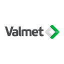

Konecranes Oyj Aktie
Konecranes Oyj ist ein börsennotiertes Unternehmen aus Finnland im Bereich Industrie. Die Aktie schloss am 24. November 2026 bei 27,12 € (Xetra). Die Dividendenrendite liegt bei 8,30 %, die Dividende je Aktie bei 2,25 Euro.
| Kennzahl | Wert |
|---|---|
| Kurs | 27,12 € Xetra, 24. November 2026 |
| Börsenwert | 2,2 Mrd. € |
| Dividendenrendite | 8,30 % |
| Dividende je Aktie | 2,25 EUR Geschäftsjahr 2025 |
| Ausschüttungsquote (Gewinn) | 45 % |
| KGV | 5,4 |
| KBV | 1,0 |
| KUV | 0,5 |
| KCV | 3,8 |
| KFCF | 4,1 |
| EV/EBITDA | 2,9 |
| PEG | 0,20 |
| ROIC | 16,8 % |
| Operative Marge | 13,0 % |
| Zinsdeckung | 8,5 x |
| Nettoschulden zu EBITDA | -0,2 |
| Umsatzwachstum 5 Jahre p. a. | 5,7 % |
| Gewinnwachstum 5 Jahre p. a. | 26,8 % |
| Free-Cashflow-Rendite | 24,1 % |
| Nettomarge | 9,5 % |
| Eigenkapitalrendite | 19,2 % |
| Umsatz | 4,6 Mrd. USD in US-Dollar umgerechnet |
| Gewinn | 438 Mio. USD in US-Dollar umgerechnet |
| Nettoschulden | -360 Mio. USD |
Die Dividende ist mit 45 % des Gewinns gedeckt.
Finanzen im Überblick
Gewinnfluss: vom Umsatz zum Gewinn
Operativer Cashflow und Free Cashflow
Mittelverwendung: Investitionen, Dividende, Rückkäufe
Dividende je Aktie
Gewinn je Aktie (verwässert)
Ausschüttungsquote
Margen: operativ und netto
Zinslast: Zinsaufwand
Zinsdeckung (operatives Ergebnis durch Zinsaufwand)
Eigenkapital, Liquidität und langfristige Schulden
Nur Testseite: Konecranes Oyj im Aktien-Hub (DCF, Analysten, Live-Kurs)
Vergleich mit ähnlichen Aktien
Gegenübergestellt sind 3 Dividendenwerte aus der Gruppe „Industrie aus Finnland“ mit ähnlichem Umsatz. Die Auswahl entsteht automatisch aus Sektor, Land und Größe.
| Aktie | Rendite | KGV | Quote |
|---|---|---|---|
| 8,30 % | 5,4 | 45 % | |
 VALMET OYJ | 4,88 % | 18,2 | 89 % |
| Wärtsilä Oyj Abp | 1,78 % | 29,1 | 52 % |
| 3,17 % | 30,0 | 95 % |
Kennzahlen aller Firmen im Vergleich
Häufige Fragen
Wie hoch ist die Dividendenrendite der Konecranes Oyj-Aktie?
Die Dividendenrendite liegt bei 8,30 % (Kurs 27,12 € am 24. November 2026).
Wie hoch ist die Dividende je Aktie bei Konecranes Oyj?
Zuletzt 2,25 Euro je Aktie (Geschäftsjahr 2025).
Welche WKN und ISIN hat Konecranes Oyj?
ISIN FI0009005870. Börsenkürzel: KCR.HE.
Hinweis: Diese Seite dient der allgemeinen Information und ist keine Anlageberatung. Zahlen aus Börsenkursen und Geschäftsberichten, ohne Gewähr.